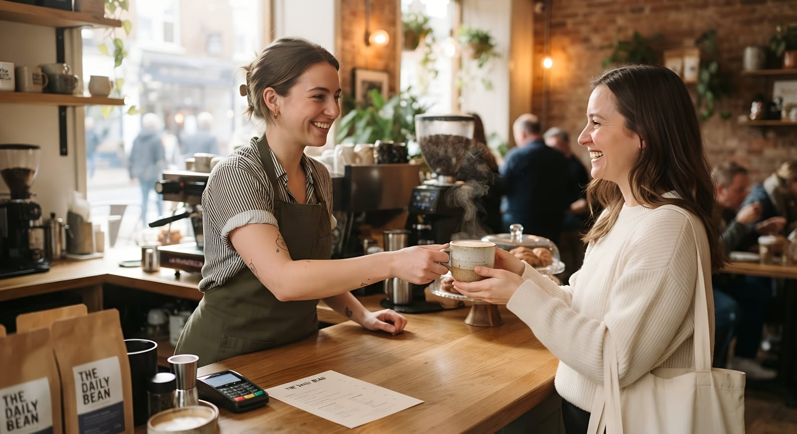
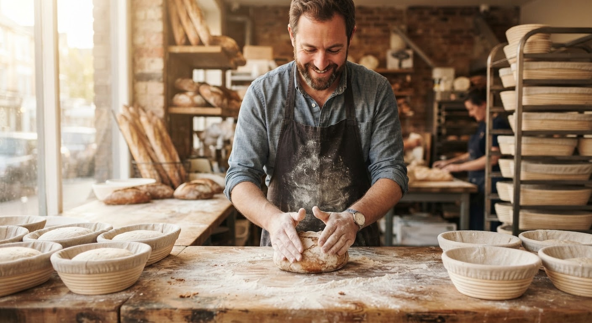
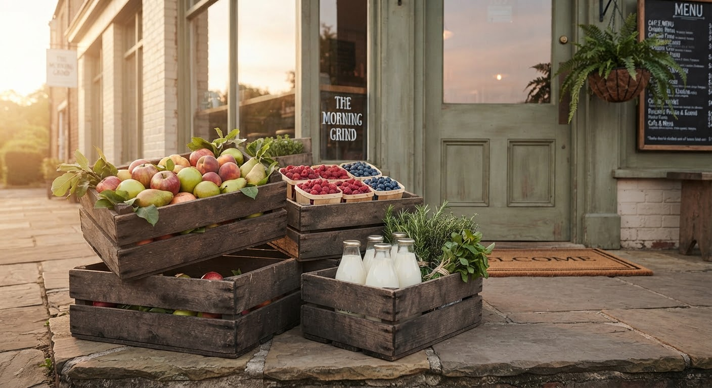
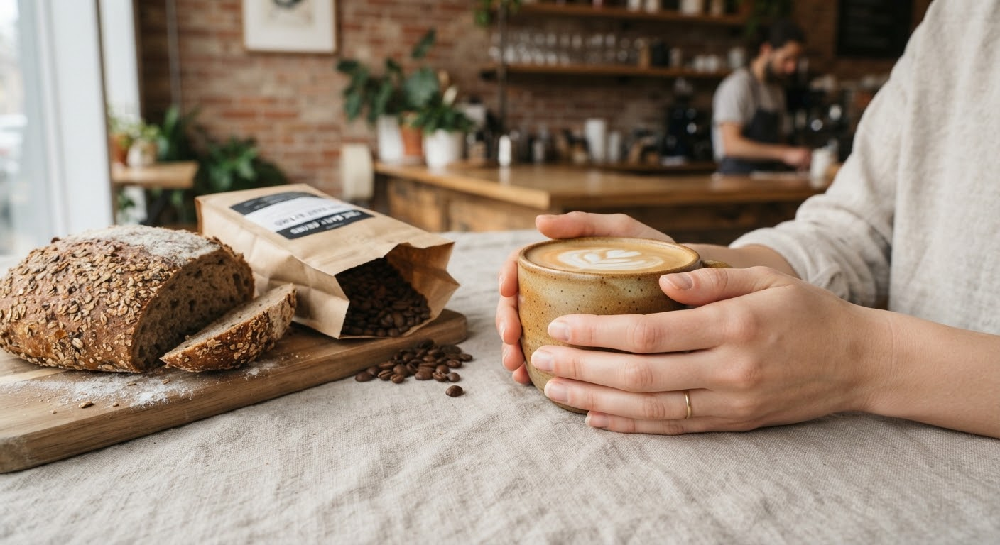
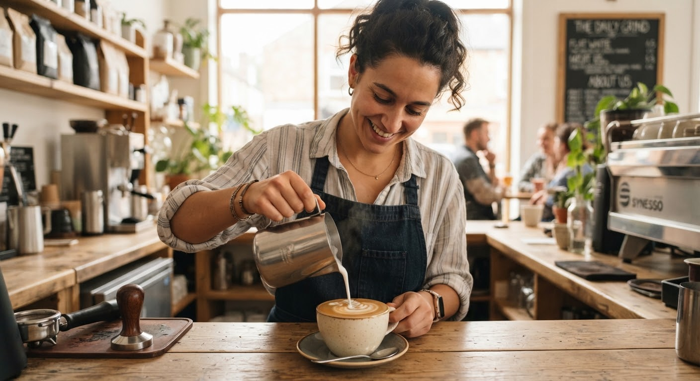
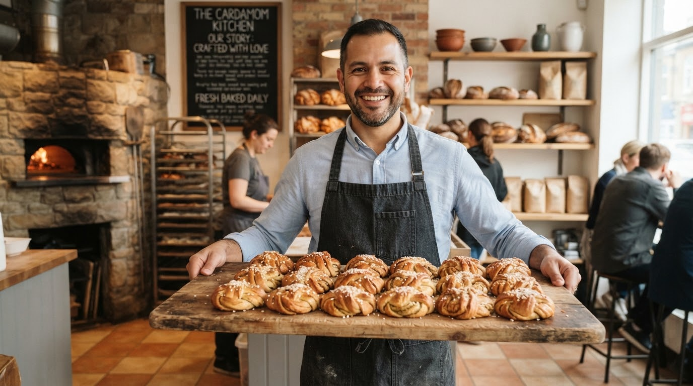
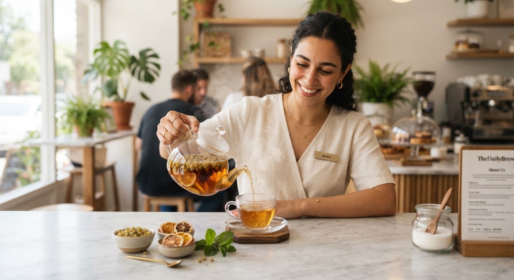
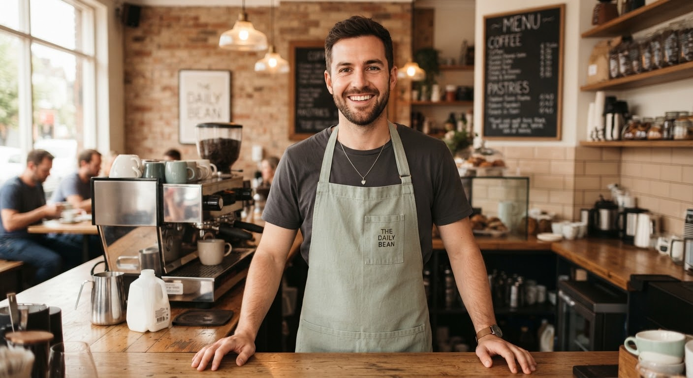
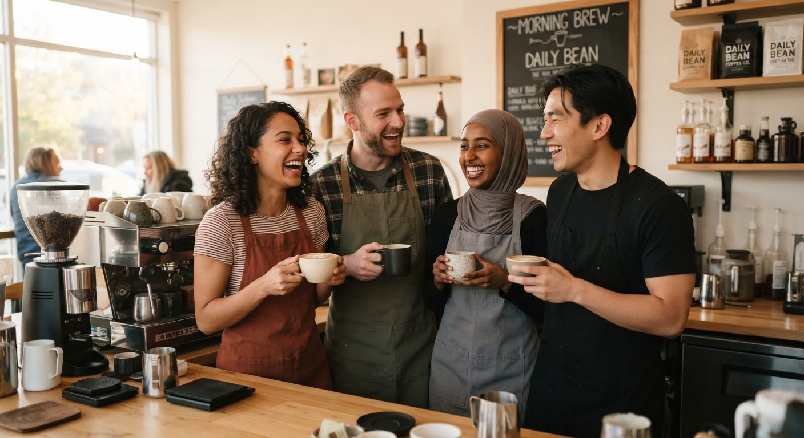

We built a café around you
It started with a kitchen table, a small espresso machine and a lot of friends who kept coming back.

Maya & Daniel
Founders · Roaster & Baker
How it began
M aya was a barista who missed the feeling of a place that knows you. Daniel was a baker who wanted people to eat his bread while it was still warm. In a former neighborhood bookshop with creaky oak floors, they put their ideas together and opened six tables and one big oven.
There were no screens for ordering, no algorithmic timers, just the smell of roasted Ethiopian beans grinding at 6:45 AM and sourdough rising under unbleached baker’s linen. They believed that when you take the rush out of morning coffee, people start looking each other in the eye again.
“We wanted a counter where nobody is just a transaction.”
— Maya & Daniel, Note from Opening Morning
What we care about
Three small promises we keep every day.

01. Know your name
We remember people, not just orders. From your preference for oat milk at extra temperature to how you like your corner table in the winter sun, our hospitality is personal, quiet, and attentive.

02. Made slowly
Fresh bread and carefully dialed coffee, never rushed. Our loaves ferment for 36 hours before hitting the brick hearth, and every batch of single-origin coffee is weighed and calibrated every single morning.

03. Good neighbors
Local roasters, local farms and a seat for everyone. We source butter from seventy miles away, honey from valley apiaries, and save our day-old crusts for our neighborhood community kitchen garden compost.
Slow mornings are meant to be shared
Pick up a warm loaf right as the timer chimes at 8:00 AM.

The people behind the counter
Meet the team who will make your next cup.

Maya Collins
Owner & Head Barista
Maya opened the café after years of making coffee for friends in her kitchen and dreaming of a place that remembers your order.

Daniel Reyes
Co-owner & Baker
Daniel gets up before sunrise to bake the cardamom buns and olive-oil loaves that fill the room with warmth.

Amira Haddad
Tea & Seasonal Menu Lead
Amira blends our house teas and invents the seasonal drinks, always with a handwritten tasting note.

Theo Brooks
Barista & Community Host
Theo knows every regular by name and organizes our Saturday quiet-reading mornings.

Pull up a chair
There is always a table with your name on it.